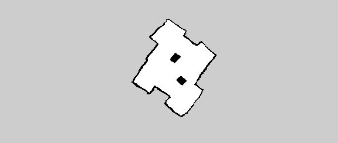
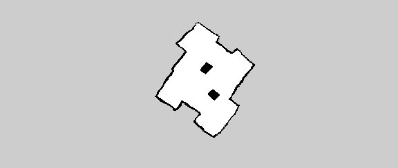

Spatial Navigation
Our focus is on movement & navigation.
Navigating a robot waiter at a cocktail party
Goal
For the Cocktail Party task we need two differnt kinds of navigation: The explorative search for humans at the party and the directed navigation to a guest or to the bar. The exploration will be achieved in cooperation with the Robot Vision Group as it is their part to detect humans in the room. Pepper should be able to detect a waving human in the room and to move into her/his direction.
Detection of guests
We decided to not search for any human, but for waving human trying to get Pepper’s attention. The detection of a waving movement will be reported by the Robot Vision Group. We get an input of the relative angle the presumed human is located to Pepper. After receiving the angle, we turn Peppers 'base' in that angle.
Navigation to a given location
Creating a map
Before our Cocktail Party starts, we map the room with Pepper. We use a SLAM Algorithm (Simultaneous Localization And Mapping): gmapping. The party location should be a room that is not too big, it should have some obstacles, but not too confusing or narrow paths. We decided to have a room of the size approximately 6x6 meters. We use Pepper’s laser sensors (to improve the quality of the map, you can use the depth camera), which are directed to only a few centimeters above the floor, so the obstacles used don’t have to be very high, but they should be placed directly on the ground. The map we receive has a lot of noise and often when exploring an area for a second time, wrong information overwrites the previously correct information. Also, Pepper often localizes itself wrong and jumps to a completely different corner of the map.
 

The map is saved with the package map_server. The recieved image is very small and still full of noise. To archieve a better result, we correct the map with the free graphic editor Gimp. We correct noise, make lines straight and corners right-angled.
Navigating in the map
Still in process ...